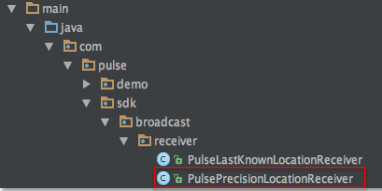
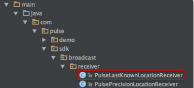

Advanced Integration - Android Studio
Deep linking
Pulse provides “deep linking” capability for the app to perform custom processing. The deep linked content is passed to the app when the user clicks on the notification or as a “silent” payload, where no notification is shown.
Please refer to the demo app to see the example of using deep linking inside the app
- To use Pulse’s deep link feature, add a class - PulseDeepLinkReceiver to the app and then instantiate this class from app’s application class:
PulseDeepLinkReceiver mPulseDeepLinkReceiver = new PulseDeepLinkReceiver (this);
- Then use intent.getStringExtra method inside the class to get deep linked content:
LocalBroadcastManager.getInstance(mApplicationContext).registerReceiver(mSilentDeepLinkReceiver,new IntentFilter(PulseConstants.PULSE_DEEP_LINK_RECEIVER));
private BroadcastReceiver mSilentDeepLinkReceiver = new BroadcastReceiver() {
@Override
public void onReceive(Context context, Intent intent) {
setPulseKey(intent.getStringExtra("key"));
Toast.makeText(mApplication, "deeplink ="+intent.getStringExtra(PulseConstants.PULSE_DEEP_LINK_CONTENT),Toast.LENGTH_LONG).show();
}
};
App Uri
Pulse also provides “App Uri” capability for email address, telephone and http URL payload. These can pass specific information directly to an activity when App is in the foreground.
Please refer to the demo app to see the example of receiving the information.
- To use Pulse’s “App Uri” feature whilst app is in foreground, add a local BroadcastReceiver to the activities you want to be notified in and then use intent.getStringExtra method to get the content:
// email
LocalBroadcastManager.getInstance(this.getApplicationContext()).registerReceiver(mAppUriEmailReceiver,new ntentFilter(PulseConstants.PULSE_APP_URI_EMAIL_RECEIVER));
private BroadcastReceiver mAppUriEmailReceiver = new BroadcastReceiver() {
@Override
public void onReceive(Context context, Intent intent) {
setPulseKey(intent.getStringExtra("key"));
Toast.makeText(getApplicationContext(), "content = "+intent.getStringExtra(PulseConstants.PULSE_APP_URI_EMAIL_CONTENT),Toast.LENGTH_LONG).show();
}
};
// http
LocalBroadcastManager.getInstance(this.getApplicationContext()).registerReceiver(mAppUriHttpReceiver,new IntentFilter(PulseConstants.PULSE_APP_URI_HTTP_RECEIVER));
private BroadcastReceiver mAppUriHttpReceiver = new BroadcastReceiver() {
@Override
public void onReceive(Context context, Intent intent) {
setPulseKey(intent.getStringExtra("key"));
Toast.makeText(getApplicationContext(), "content = "+intent.getStringExtra(PulseConstants.PULSE_APP_URI_HTTP_CONTENT),Toast.LENGTH_LONG).show();
}
};
// telephone
LocalBroadcastManager.getInstance(this.getApplicationContext()).registerReceiver(mAppUriTelReceiver,new IntentFilter(PulseConstants.PULSE_APP_URI_TEL_RECEIVER));
private BroadcastReceiver mAppUriTelReceiver = new BroadcastReceiver() {
@Override
public void onReceive(Context context, Intent intent) {
setPulseKey(intent.getStringExtra("key"));
Toast.makeText(getApplicationContext(), "content = "+intent.getStringExtra(PulseConstants.PULSE_APP_URI_TEL_CONTENT),Toast.LENGTH_LONG).show();
}
};
protected void setPulseKey(String key) {
mApplication.getPulseSDKInstance().setPulseAppUrlKey(key);
}
Segments
Specific group of users can be targeted based on Segments. Use setSegments method to pass the Segment data from app for targeted engagement:
- You can set up to 10 segments using setSegments method:
ArrayList<String> segmentList = new ArrayList<String>();
segmentList.add(0, "gender=female");
segmentList.add(1, "age=35");
segmentList.add(2, "job=engineer");
mPulseSDK.setSegments(segmentList);
- Use clearSegments to remove previously set segments:
mPulseSDK.clearSegments();
Precise and lastknown location
Pulse provides two methods for the app to get device location in the foreground (a) High precision location and (b) Last known location Please refer to the demo app code to see the complete example.
Request the high prcision location
Use getHighPrecisionLocation() method to request the high precision location
mApplication.getPulseSDKInstance().getHighPrecisionLocation(context);
where, context = this.getApplicationContext()
Receive the high prcision location
A BroadcastReceiver can then be used to receive the information asynchronously.
- Add the following BroadcastReceiver to AndroidManifest.xml file
<receiver
android:name="com.pulse.sdk.broadcast.receiver.PulsePrecisionLocationReceiver"
android:enabled="true"
android:exported="false">
<intent-filter>
<action
android:name="com.pulse.sdk.broadcast.high.precision.location.CUSTOM_INTENT">
</action>
</intent-filter>
</receiver>
-
Then add “com.pulse.sdk.broadcast.receiver” package in the application project
-
Inside the package, create “PulsePrecisionLocationReceiver” class
-
Once setup, they should appear as following directory structure: 
-
Please refer to the demo app’s PulsePrecisionLocationReceiver.java file to get the location information:
public class PulsePrecisionLocationReceiver extends BroadcastReceiver{
@Override
public void onReceive(Context context, Intent intent) {
double dValue = 0;
float fValue = 0;
long lValue = 0;
double latitude =
intent.getDoubleExtra(PulseConstants.PULSE_LOCATION_LATITUDE, dValue);
double longitude = intent.getDoubleExtra(PulseConstants.PULSE_LOCATION_LONGITUDE, dValue);
float accuracy = intent.getFloatExtra(PulseConstants.PULSE_LOCATION_ACCURACY, fValue);
long time = intent.getLongExtra(PulseConstants.PULSE_LOCATION_TIME, lValue);
}
}
Get last known locaton
Use getLastKnownLocation() method to request the last known location from Pulse’s SDK:
showLastKnownLocation(mApplication.getPulseSDKInstance().getLastKnownLocation(context));
where, context = this.getApplicationContext()
private void showLastKnownLocation(ArrayList<String> mLastKnownLocation) {
if((null != mLastKnownLocation)&&(mLastKnownLocation.size()==4)) {
Toast.makeText(this, "Last-Known-Location:"
+PulseConstants.PULSE_LOCATION_LATITUDE+"="+mLastKnownLocation.get(0)+","
+PulseConstants.PULSE_LOCATION_LONGITUDE+"="+mLastKnownLocation.get(1)+","
+PulseConstants.PULSE_LOCATION_ACCURACY+"="+mLastKnownLocation.get(2)+","
+PulseConstants.PULSE_LOCATION_TIME+"="+mLastKnownLocation.get(3),
Toast.LENGTH_LONG).show();
}else {
Log.i(TAG, "mLastKnownLocation==Null or mLastKnownLocation.size()!=4)");
}
}
Regular locaton update
The app can also receive regular location updates from Pulse in all states of operations. A BroadcastReceiver can be used to receive the location information asynchronously.
- Add the following BroadcastReceiver to AndroidManifest.xml file:
<receiver
android:name="com.pulse.sdk.broadcast.receiver.PulseLastKnownLocationReceiver"
android:enabled="true"
android:exported="false">
<intent-filter>
<action
android:name="com.pulse.sdk.broadcast.last.known.location.CUSTOM_INTENT">
</action>
</intent-filter>
</receiver>
-
Then add “com.pulse.sdk.broadcast.receiver” package in the application project
-
Inside the package, create “PulseLastKnownLocationReceiver” class
-
Once setup, they should appear as following directory structure: 
- Please refer to the demo app’s PulseLastKnownLocationReceiver.java file to get the location information:
public class PulseLastKnownLocationReceiver extends BroadcastReceiver{
@Override
public void onReceive(Context context, Intent intent) {
double dValue = 0;
float fValue = 0;
long lValue = 0;
double latitude = intent.getDoubleExtra(PulseConstants.PULSE_LOCATION_LATITUDE, dValue);
double longitude = intent.getDoubleExtra(PulseConstants.PULSE_LOCATION_LONGITUDE, dValue);
float accuracy = intent.getFloatExtra(PulseConstants.PULSE_LOCATION_ACCURACY, fValue);
long time = intent.getLongExtra(PulseConstants.PULSE_LOCATION_TIME, lValue);
}
}
Google DFP
Pulse can also perform real-time geo-targeting and dynamic creative personalisation for display ads.
This capability currently works with Google DFP, when app is in the foreground (i.e.open)
Google DFP SDK
Setup DFP SDK as per Google’s instructions and verify you can display ads without using Pulse: https://developers.google.com/mobile-ads-sdk/docs/dfp/android/quick-start
Enable Pulse capability
Enable Pulse capability on the Activities where ads are being shown:
-
Use enablePulseDFP method to enable Pulse
-
Use Pulse’s getDFPCustomParameters method to execute showPulseDFP E.g.:
@Override
protected void onResume() {
super.onResume();
// Enable Pulse DFP feature
String result = mApplication.getPulseSDKInstance().enablePulseDFP(this);
// Verify instantiation
if(success.equalsIgnoreCase(result)) {
@SuppressWarnings("static-access")
HashMap<String,String> mDFPCustomParameters = mApplication.getPulseSDKInstance().getDFPCustomParameters();
if((null != mDFPCustomParameters)&&(mDFPCustomParameters.size()==8)) {
showPulseDFP(mDFPCustomParameters);
}else {
showDefaultDFP();
}
}else {
//Pulse DFP is not available
showDefaultDFP();
}
}
- Use disablePulseDFP to disable Pulse ads when app is not open E.g.:
@Override
protected void onPause() {
String result = mApplication.getPulseSDKInstance().disablePulseDFP();
super.onPause();
}
- Use addCustomTargeting in showPulseDFP to pass user’s real time location needs to Google DFP E.g.:
private void showPulseDFP(HashMap<String, String> mDFPCustomParameters) {
if(true != mPulseDFP) {
mPulseDFP = true;
if((null != mDFPCustomParameters)&&(mDFPCustomParameters.size()==8)) {
// Add customer parameters to DFP
Iterator<String> keySetIterator = mDFPCustomParameters.keySet().iterator();
String[] pulseDfpKey = new String[mDFPCustomParameters.size()];
String[] pulseDfpKeyValue = new String[mDFPCustomParameters.size()];
int index = 0;
while(keySetIterator.hasNext()){
String key = keySetIterator.next();
pulseDfpKey[index] = key;
pulseDfpKeyValue[index] = mDFPCustomParameters.get(key);
index++;
}
PublisherAdRequest newRequest = new PublisherAdRequest.Builder()
// Remove in Production
.addTestDevice("951599B6898217134B31EEB6E9145F9")
// Pulse DFP Targeting
.addCustomTargeting(pulseDfpKey[0],pulseDfpKeyValue[0])
.addCustomTargeting(pulseDfpKey[1],pulseDfpKeyValue[1])
.addCustomTargeting(pulseDfpKey[2],pulseDfpKeyValue[2])
.addCustomTargeting(pulseDfpKey[3],pulseDfpKeyValue[3])
.addCustomTargeting(pulseDfpKey[4],pulseDfpKeyValue[4])
.addCustomTargeting(pulseDfpKey[5],pulseDfpKeyValue[5])
.addCustomTargeting(pulseDfpKey[6],pulseDfpKeyValue[6])
.addCustomTargeting(pulseDfpKey[7],pulseDfpKeyValue[7])
// Media DFP Targeting
.addCustomTargeting("keyword","mobile_banner")
.build();
mPublisherAdView.loadAd(newRequest);
}else {
Log.i(TAG,"mDFPCustomParameters==Null , mDFPCustomParameters.size()!=8");
}
}else {
Log.i(TAG, " mPulseDFP ==true");
}
}
private void showDefaultDFP() {
PublisherAdRequest newRequest = new PublisherAdRequest.Builder()
// Remove in Production
.addTestDevice("951599B6898217134B31EEB6E9145F9")
// DFP Targeting
.addCustomTargeting("keyword","mobile_banner")
.build();
mPublisherAdView.loadAd(newRequest);
}